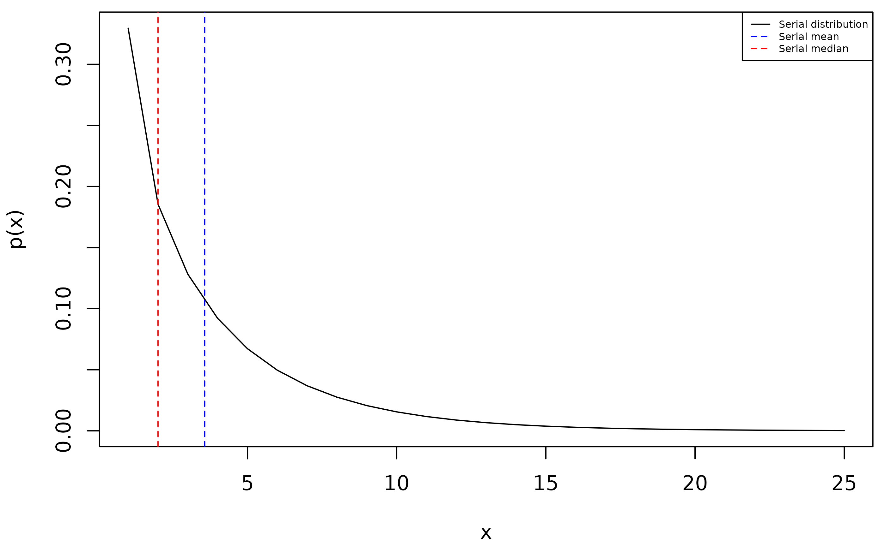

The serial distribution of an infectious disease is the distribution of the time from when an infectious individual – the infector – becomes symptomatic, to when another individual who is infected by the infector becomes symptomatic. The serial interval refers to a range of likely values from this distribution, although it is typically reported as the mean.
In the White and Pagano method, the serial distribution is assumed to
be a discretized, finite version of a gamma distribution. Setting the
parameter serial to TRUE causes this
discretized distribution to be returned in addition to the estimate of
R0. Furthermore, the method can be used whether or not the serial
interval (specified as the parameter mu) is known. When
mu is specified, it is taken to be the mean of a continuous
gamma distribution (i.e., before the discretization). As such, the mean
computed from the returned serial distribution may differ slightly from
mu:
# Case counts.
cases <- c(1, 4, 10, 5, 3, 4, 19, 3, 3, 14, 4)
estimate <- wp(cases, mu = 3.333, serial = TRUE)
# `supp` is the support of the distribution, and `pmf` is its probability mass
# function.
sum(estimate$supp * estimate$pmf)
#> [1] 3.840047When mu is unspecified (left to its default value of
NA), the method performs a maximum likelihood estimation
over all (discretized) gamma distributions via a grid search, whose
range of parameters are specified via grid_length,
max_shape and max_scale (see ?wp
for more details). It is useful to return the estimated serial
distribution in this case, as it can provide estimates of the serial
interval when it is unknown:
# The grid search parameters specified below are the default values.
estimate <- wp(cases, serial = TRUE,
grid_length = 100, max_shape = 10, max_scale = 10
)
serial_mean <- sum(estimate$supp * estimate$pmf)
serial_mean
#> [1] 3.564191
# Compute the (discrete) median for an alternative estimate of the serial
# interval.
cdf <- cumsum(estimate$pmf)
serial_med <- estimate$supp[which(cdf >= 0.5 & estimate$pmf - cdf + 1 >= 0.5)]
serial_med
#> [1] 2Below is a graph of the above results, containing the serial distribution as well as its mean and median, which could be used as estimates of the serial interval:
